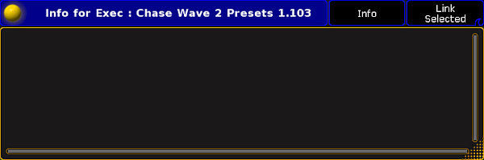
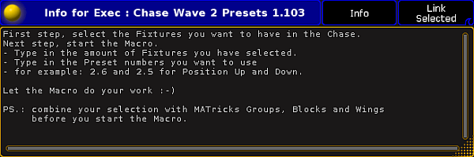
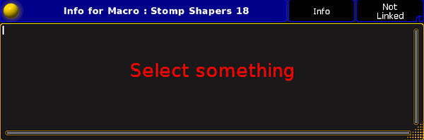
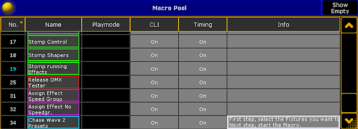

By using the info window, you can easily assign information to an object or view information of an object.
You can add object info such as a what a macro does, what fixtures are included in a universe, what device creates a timecode slot, where a cue is used, and so on.
Open the info window
Tap on an empty space on one of the screens, tap Other, tap Info.
The info window opens and views by default the info of the object on the selected executor. This is indicated in the title bar by the button Link Selected.

Empty info window
The info window is open and views the info to the object the selected executor.
Assign info to the object on the selected executor
Requirement: Existing object on the selected executor.
Open the info window and type the info in the info window (black area).

Assigned info in the info window
The info is assigned to the object on the selected executor. The pool object has a information icon in the upper right corner.
If the sheet style is selected for pool, the info is displayed in the info column.
Hint:
You can also assign info by using the command line along with the object keyword and the parameter info. See as an example the Preset keyword.
Assign info to an object (not selected executor) by using the info window
Requirement: Existing pool object.
Open the info window and tap in the title bar the button Info.
The words Select something appears in the info window and the button in the title bar changes to Not Linked. The Info keyword is in the command line.

Select something to assign info in the info window
Tap in a pool at the pool object to assign the information.
The title bar in the information window displays the pool object label and the pool object number.
Type the info in the info window (black area).
Assigned info in the info window
The info is assigned to the selected object. The pool object has a information icon in the upper right corner.
If the sheet style is selected for pool, the info is displayed in the info column.
Hint:
You can also assign info by using the command line along with the object keyword and the parameter info. See as an example the Preset keyword.
Assign info to an object (not selected executor) by using the pool
Requirement: Existing pool object.
Open the pool of the stored pool object.
To turn the pool window into a sheet style, tap at the yellow ball and then tap Sheet Style.
Type the info in the info column.

Macro pool sheet style
The info is assigned to the pool object.
View info of the last go
Requirement: A recently started sequence or cue.
Open the info window and swipe the button in the title bar to select Link Last Go.
The info window displays the info to the recently started sequence or cue.
View info of the current cue
Requirement: A running cue.
Open the info window and swipe the button in the title bar to select Link Current Cue.
The info window displays the info to the current running cue. If no cue is running, No Info is displayed in the title bar.
View info of the next cue
Requirement: Selected executor.
Open the info window and swipe the button in the title bar to select Link Next Cue.
The info window displays the info to the next cue of the selected executor.